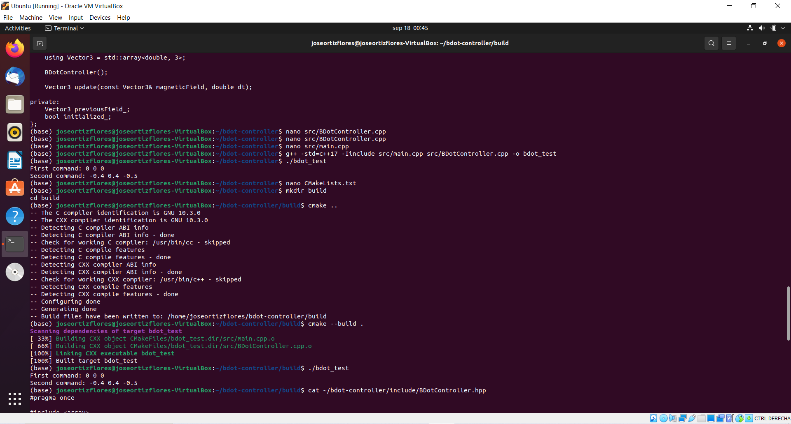
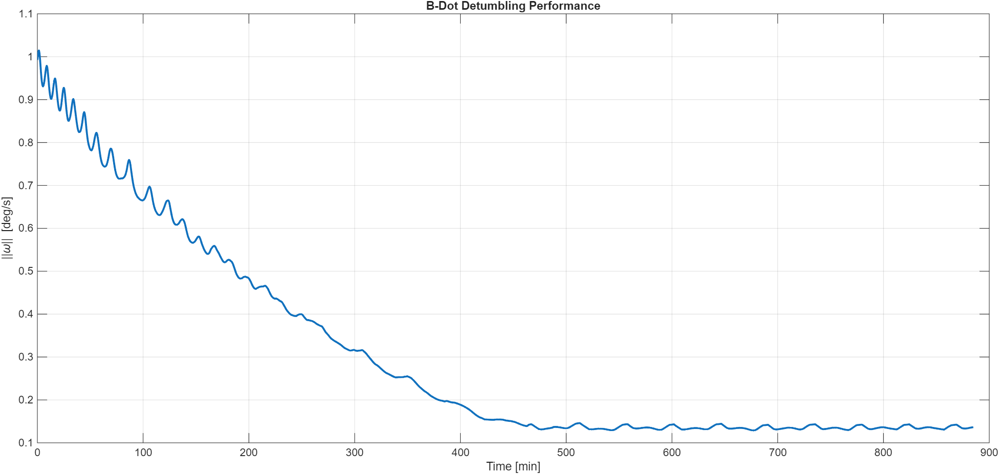
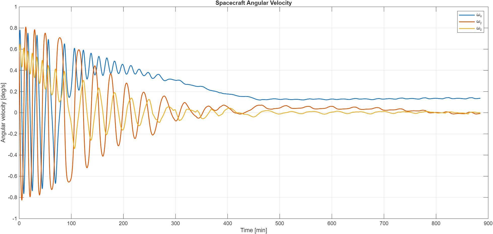
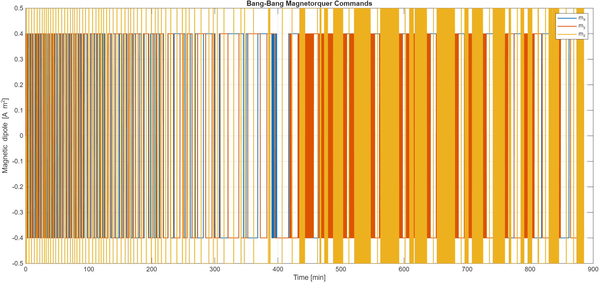

SPACECRAFT · AOCS · C++ · MATLAB · LINUX
B-Dot Spacecraft Detumbling
Bang-bang magnetic detumbling controller implemented in C++, built and tested under Linux, and integrated with a MATLAB spacecraft simulation for closed-loop validation.
Problem
Reduce an initial spacecraft tumble using only magnetic actuation, while keeping the control algorithm separate from the spacecraft and environment simulation.
My role
Developed the spacecraft and geomagnetic simulation in MATLAB, implemented the B-dot controller in C++, built and tested the C++ code under Ubuntu, and integrated the compiled controller with MATLAB through a MEX interface.
Workflow
Approach
The controller follows the B-dot detumbling method described by Landis Markley and John Crassidis in Fundamentals of Spacecraft Attitude Determination and Control. In practice, B-dot is often implemented as a bang-bang controller because differentiating magnetic-field measurements can amplify noise. The controller therefore uses the sign of the estimated field derivative to command the available magnetic dipole along each body axis.
mᵢ = −mᵢ,max sign(Ḃᵢ)
In this simulation, B is provided directly by the modeled Earth magnetic field expressed in the spacecraft body frame. The controller runs discretely at 10 Hz and commands a modeled GomSpace NanoTorque GST-600 Mk2 with maximum dipole moments of 0.40, 0.40, and 0.50 A·m² along the three axes.
C++ implementation
The B-dot algorithm and its previous-field state are contained in a small C++ class. MATLAB supplies the current modeled body-frame magnetic field and controller time step through a MEX interface; the compiled C++ controller returns the three-axis magnetic dipole command.
Vector3 command = {0.0, 0.0, 0.0};
for (int i = 0; i < 3; ++i)
{
double Bdot =
(magneticField[i] - previousField_[i]) / dt;
if (Bdot > 0.0)
command[i] = -maxDipole[i];
else if (Bdot < 0.0)
command[i] = maxDipole[i];
}
previousField_ = magneticField;
return command;Linux build & test
The portable controller was developed and tested in an Ubuntu virtual machine using GNU C++, CMake, and Git. I first compiled the source directly with g++, then reproduced the build using CMake and executed a simple two-sample test to verify the expected bang-bang commands.

Selected results



Outcome
Built a compact AOCS software-in-the-loop style demonstration in which MATLAB provides the spacecraft and magnetic environment while a separately implemented C++ controller generates the magnetic detumbling commands. The project also refreshed a practical Linux C++ build and test workflow.